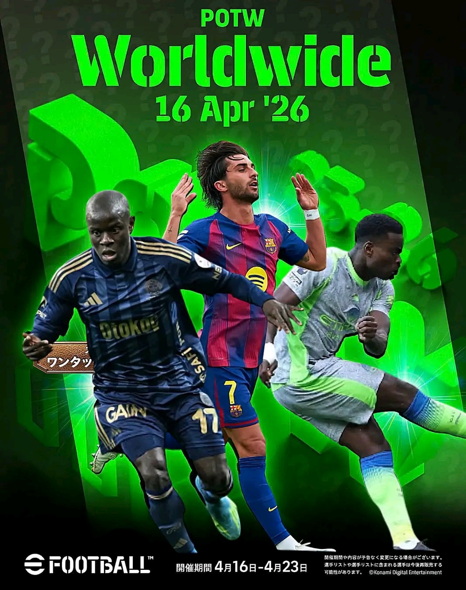

🔮 eFootball 2026 Update (April 16 Breakdown)
📢 Full Update Overview
Thursday’s update is not just a small refresh… it actually changes key parts of the game.
Here’s everything confirmed so far:
- Daily Game rewards are changing
- Andriy Shevchenko replaces Eden Hazard
- Full progress reset
- New POTW pack released
- Minor gameplay adjustments expected
Most players will log in without preparation and lose rewards.
👉 If you’re reading this early, you already have an advantage.
Here’s everything confirmed so far:
- Daily Game rewards are changing
- Andriy Shevchenko replaces Eden Hazard
- Full progress reset
- New POTW pack released
- Minor gameplay adjustments expected
Most players will log in without preparation and lose rewards.
👉 If you’re reading this early, you already have an advantage.
🔥 Shevchenko Replaces Hazard
One of the biggest changes in this update is the Daily Game reward replacement.
❌ Eden Hazard will be completely removed ✅ Andriy Shevchenko becomes the new reward
This is not just a random change — it completely shifts the type of player you get.
Shevchenko is a pure striker (Goal Poacher) known for:
- Elite finishing inside the box
- Intelligent attacking runs
- Fast reactions in tight spaces
👉 This makes him perfect for:
- Counter attacking players
- Quick through ball gameplay
- Direct attacking styles
⚠️ If you didn’t finish Hazard, you’ve lost that reward permanently.
❌ Eden Hazard will be completely removed ✅ Andriy Shevchenko becomes the new reward
This is not just a random change — it completely shifts the type of player you get.
Shevchenko is a pure striker (Goal Poacher) known for:
- Elite finishing inside the box
- Intelligent attacking runs
- Fast reactions in tight spaces
👉 This makes him perfect for:
- Counter attacking players
- Quick through ball gameplay
- Direct attacking styles
⚠️ If you didn’t finish Hazard, you’ve lost that reward permanently.
♻️ Daily Game Reset (Important)
After maintenance, the Daily Game system will reset completely.
That means:
- Your current progress → erased
- Your reward path → restarted
- Your saved chances → risk being wasted
Many players ignore this and regret it later.
👉 Before the update:
- Use all your chance deals
- Complete as much progress as possible
⚠️ Once reset happens, nothing can be recovered.
That means:
- Your current progress → erased
- Your reward path → restarted
- Your saved chances → risk being wasted
Many players ignore this and regret it later.
👉 Before the update:
- Use all your chance deals
- Complete as much progress as possible
⚠️ Once reset happens, nothing can be recovered.
⭐ POTW (Player of the Week)
A fresh POTW pack is arriving with this update.
Some of the expected names include:
• Ferran Torres – attacking option with good movement
• N’Golo Kanté – strong defensive midfielder
• Guehi – explosive winger from Man City
These players usually come with:
- Boosted stats
- Better in-game responsiveness
- Limited-time availability
👉 Smart players don’t spin blindly — they choose what fits their squad.

Some of the expected names include:
• Ferran Torres – attacking option with good movement
• N’Golo Kanté – strong defensive midfielder
• Guehi – explosive winger from Man City
These players usually come with:
- Boosted stats
- Better in-game responsiveness
- Limited-time availability
👉 Smart players don’t spin blindly — they choose what fits their squad.
🎮 Gameplay Adjustments
While no major gameplay overhaul has been confirmed, small changes are expected.
Based on past updates, this could include:
- Slight passing adjustments
- Defensive positioning tweaks
- AI balance improvements
These changes may feel small… but they affect matches over time.
👉 Good players adapt quickly. Casual players struggle.
Based on past updates, this could include:
- Slight passing adjustments
- Defensive positioning tweaks
- AI balance improvements
These changes may feel small… but they affect matches over time.
👉 Good players adapt quickly. Casual players struggle.
⚠️ Current Issue (Important)
Some users are currently experiencing issues with updating or downloading the game via Google Play.
This has already been acknowledged and is under investigation.
👉 If your update fails:
- Don’t panic
- Wait for official fix
- Avoid reinstalling unnecessarily
This has already been acknowledged and is under investigation.
👉 If your update fails:
- Don’t panic
- Wait for official fix
- Avoid reinstalling unnecessarily
👀 Final Thoughts
This update is more important than it looks.
It changes rewards, resets progress, and introduces new players that can impact your squad.
Most players will react late.
👉 Be early. Prepare now. Stay ahead.
It changes rewards, resets progress, and introduces new players that can impact your squad.
Most players will react late.
👉 Be early. Prepare now. Stay ahead.